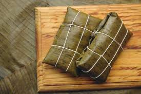

¿How to make a Hallaca?

Hallaca
Hallaca is a traditional dish from Venezuela. It has been compared to the tamale. It is made from a corn flour dough, seasoned with chicken or chicken broth and dyed with onoto or achiote, filled with a stew of beef, pork and chicken or chicken.
- 2 kg. of chicken.
- 2 kg. of beef.
- 1 kg. of pork.
- 1 kg. of diced onions.
- 400 gr. of finely chopped leek garlic.
- 200 gr. of finely chopped chives.
- ¾ cup peeled and crushed garlic cloves.
- 1 kg. paprika, seeded and cut into thin strips.
- ¼ cup finely chopped sweet pepper.
- ½ cup capers.
- 500 gr. of ground paper.
- Worcestershire sauce to taste.
- 1 ½ kg. of tomatoes without skin and without seeds.
- 1 cup of sweet wine.
- 1 ½ cup vegetable oil.
- 2 cups of broth.
- 2 ½ kgs. of yellow corn flour.
- 1 cup of vegetable oil.
- 3 liters of chicken broth.
Steps to make a hallaca
Of the stew
- Wash the meat very well and remove excess fat.
- Parboil each piece separately,
without softening them completely.
-
- The meat must be firm to prevent it from falling apart when preparing the stew.
- Reserve the broth that results from cooking
the beef and chicken.
- Separately, in a large pot, sauté onion, garlic, chives and garlic, and sauté for 5 minutes or until wilted.
- Add the paprika, sweet chili and 2 cups of broth.
- Let cook for a few more minutes.
- Add the meats, and add the rest of the ingredients, leaving finally the tomatoes, wine and marinade to taste.
- Cook the stew for 30 to 40 minutes, stirring occasionally, being careful to prevent it from falling apart.
- Cook the stew until it thickens and let it rest, covered with a cloth, overnight.
of the dough
- Knead the corn flour with the oil and broth.
- Form balls of 5 or 7 cm with your hands. approximately.
of the hallacas
- Grease a large sheet with the onoto-colored oil.
- In the center, place a ball of dough and flatten it firmly until the dough is very thin, about 1 to 2 millimeters thick, uniform and in the shape of a circle.
Then, pour 2 ½ tablespoons of the cold stew into the center of the dough.
- On top, place the decorations evenly distributed: 2 paprika strips, 2 olives and 6 raisins; The amount depends on taste.
- You can also add pickles to the filling.
- To wrap them, fold the sides successively and then the two ends inward.
- Wrap first with the large leaf, then with the smaller leaf, as a protective wrap against water.
- Tighten carefully and tie with wick, crossing it 3 times in each direction. It should always end in the center so that the mooring is more secure.
- Finally, in a pot with boiling water and salt, place the hallacas.
Let them cook for 1 hour.
- Remove from the water and let them drain.
- Serve hot.
- Once cool, refrigerate the hallacas that are not consumed, so they will remain in good condition for up to 4 weeks.